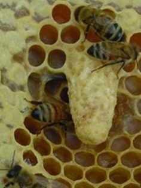

Секрети бджільництва.
Тиха заміна матки.

Ранньою навесні минулого року я із здивуванням виявив під льотками чотирьох вуликів на своїй пасіці трупи мічених
маток, що відпрацювали один-два сезону. Спочатку засмутився, але знайомий досвідчений бджоляр заспокоїв мене і
розповів, що в цих сім'ях сталася тиха зміна матки і це велике благо для бджоляру. Завершуючи цикл публікацій про
заміну матки, сьогодні я розповім про те, як відбувається тиха зміна матки і які переваги має сім'я з такою маткою.
Зміна матки у бджолиній сім'ї це цілком природний процес. У природі бджоли міняють маток як шляхом роїння, коли
стара матка виходить з вулика разом з роєм-перваком, так і шляхом, так званої, тихої зміни матки, коли вона
убивається бджолами прямо у вулику. Причин, по яких бджоли вирішують змінити матку багато.
Відмічу основні:
- Хвороба старої матки.
- Фізичне ушкодження матки.
- Знос матки за вислугою років.
- Несумісність породи.
Перевага тихої зміни в тому, що сім'ї, що замінили свою матку самі, виявляються в результаті цього найсильнішими на пасіці і принесуть багато меду. А оскільки тиха зміна матки робиться без відома бджоляру, то логічно було б назвати цей метод заміни маток на пасіці таємним методом.
Як відбувається тиха зміна матки?
Усвідомивши, що стара матка більше не влаштовує бджіл, вони закладають маточник на основі яйця, відкладеного маткою
не у бджолиний осередок як завжди, а в заздалегідь підготовлену для цього миску. Іноді це можуть бути декілька
маточників, але частіше всього один. По недосвідченості бджолярі приймають такий маточник за роевой і
видаляють. Особливо якщо знаходять його в роевую пору. Або ж, навпаки, виявляючи у вулику свищуваті маточники
(відтягнуті бджолами із стандартного бджолиного осередку, а не з миски) бджоляр залишає їх, наївно вважаючи, що
в сім'ї йде підготовка до тихої зміни матки.
Як проходить тиха заміна матки.
Усвідомивши, що стара матка більше не влаштовує бджіл, вони закладають маточник на основі яйця, відкладеного маткою
не у бджолиний осередок як завжди, а в заздалегідь підготовлену для цього миску. Іноді це можуть бути декілька
маточників, але частіше всього один. По недосвідченості бджолярі приймають такий маточник за роевой і видаляють.
Особливо якщо знаходять його в роевую пору. Або ж, навпаки, виявляючи у вулику свищуваті маточники(відтягнуті
бджолами із стандартного бджолиного осередку, а не з миски) бджоляр залишає їх, наївно вважаючи, що в сім'ї йде
підготовка до тихої зміни матки.
Так бджоли закладають маточник
Якщо не вирізувати, а залишити такий поодинокий маточник, то через деякий час з нього вийде молода матка і відправиться
на обліт. Поки молода матка готується до обльоту, в сім'ї живуть дві матки одночасно. Під час обльоту молодої, стара матка
продовжує засів і бджоли її не чіпають, але коли молода повертається у вулик після вдалого обльоту, стару матку бджоли
починають потихеньку душити. А задушивши зовсім, викидають з вулика. Так що ранньої весни почастіше придивляйтеся до
підмору під вічком, чи немає там матки. Далі роботу по яйцекладу в сім'ї продовжує молода матка. Так відбувається в
ідеалі.
На практиці ж іноді буває інакше. Іноді стару матку бджоли вбивають ще до того, як облітається молода неплідна матка.
А остання, адже, може і не повернутися з обльоту(загинула в дорозі, птахи закльовували і ін.). Відкритого розплоду на
той час вже немає і сім'я не здатна вивести собі нову матку. У такому разі бджоли перетворюються на трутовок, і якщо
бджоляр вчасно не виправить таку семью-трутовку, то вона приречена на загибель.
Однією з ознак підготовки бджолиної сім'ї до тихої зміни матки є наявність у вулику маточника і відсутність або
незначна кількість розплоду трутня.
Про провокацію бджолярем сім'ї на тиху зміну матки.
Враховуючи те, що сім'ї, в яких бджоли самі змінили матку, приносять багато меду, деякі т.з. "бджолярі" провокують тиху
зміну матки в сім'ї, навмисно наносячи фізичні каліцтва старій матці. Вони відрізують їй ніжки, підрізують крила або
фарбують їх лаком для нігтів і так далі. Таким бджолярям-садистам саме місце в пеклі.
Існує і гуманніший спосіб, покликаний штучно викликати тиху зміну матки. Для цього треба розділити сімома рамками з
сушею. П'ять-шість рамок з сушею вставляють в центр гнізда якщо це вулик-лежак, або розділяють пчелосемью корпусом з
сушею у випадку з багатокорпусними вуликами. Важливо, щоб в кожній стороні від розміщеної суші були рамки з одноденним
засівом. З того боку, де не виявиться матки, бджоли відтягнуть маточник, з якого через шістнадцять днів вийде молода
матка. Сім'я зміцніє і об'єднається, а молода матка уб'є стару. Буває, що в таких розділених сім'ях одночасно до
місяця працюють обидві матки.